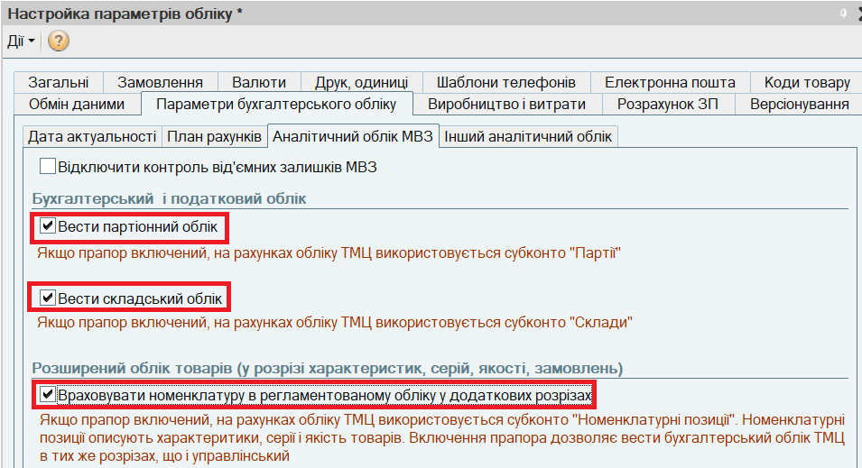
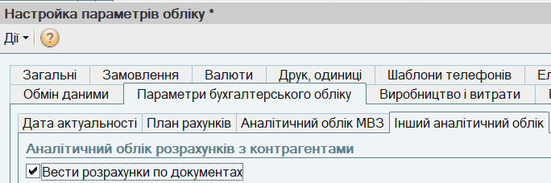
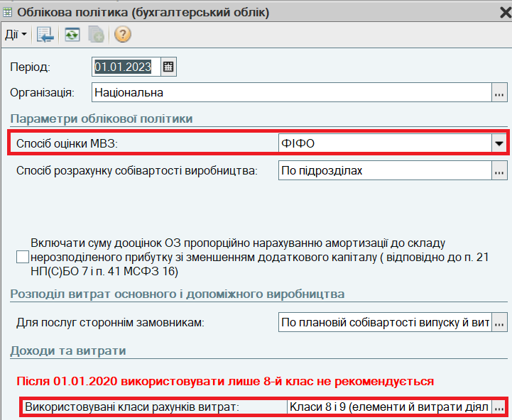
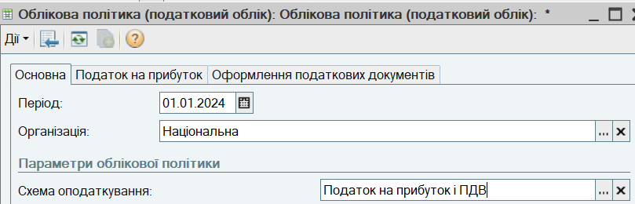

(або клавішею Ins, або за пунктом меню Дії - Додати). Налаштуйте основні параметри облікової політики:
(або клавішею Ins, або за пунктом меню Дії - Додати). Налаштуйте основні параметри облікової політики:1. На початку роботи в програмі необхідно налаштувати параметри аналітичного обліку матеріально-виробничих запасів (МВЗ). Для цього в формі Настройка параметрів обліку перейдіть на закладку Параметри бухгалтерського обліку. На закладці Аналітичний облік МВЗ включіть прапори, які регулюють додавання субконто на бухгалтерські рахунки запасів (20, 28, 26 тощо):

2. Перейдіть на закладку Інший аналітичний облік і встановіть прапор Вести розрахунки по документах. На бухгалтерських рахунках розрахунків (36, 63 тощо) буде додано субконто "Документ розрахунків з контрагентом".

(або клавішею Ins, або за пунктом меню Дії - Додати). Налаштуйте основні параметри облікової політики:
(або клавішею Ins, або за пунктом меню Дії - Додати). Зазначте Схему оподаткування.
ПРИМІТКА
В полі Період зазначається дата, починаючи з якої застосовується облікова політика бухгалтерського (податкового) обліку. Якщо облікова політика зміниться, необхідно ввести нову облікову політику і встановити в полі Період дату, з якої вона діє.
ВАЖЛИВО!
Облікова політика бухгалтерського і податкового обліку налаштовується окремо для кожної організації, яка входить до складу підприємства. У списках Облікова політика (бухгалтерський/податковий облік) мають бути заповнені окремі записи для кожної організації.